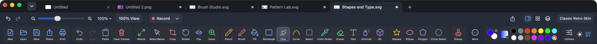

Layers and masks
Name, hide, lock and reorder layers, set opacity, and add a mask when you want to hide part of one without erasing it.
Mac paint app · Pay once
Pick a tool and start. Every button has its name under it, every option panel explains itself, and the picture you make stays easy to move and change until it looks right.
Requires a Mac with Apple silicon and macOS 14 or later. Your pictures stay on your Mac.

See it made
Nothing in this picture was imported. Each part was drawn with a tool you can see on the toolbar. Shapes float until you press Return, so you can move, resize or turn them first.


A rectangle with a radial gradient makes the sky glow. The sun is a circle with its own gradient, the clouds are overlapping white ellipses, and two quick pencil strokes became birds.

A few clicks with the Polygon tool and a Diamond gradient from pink to yellow. A drag on the round handle tilted it into the wind. The spars are 2 px lines, the string is the pencil, and the bows are tiny polygons.

Three ellipses filled with the Sparse Dots pattern, using green as one color and red as the other. Apples, for free. The trunk is a plain rectangle.

One rectangle with the Brick pattern at 2× tile size. The roof is a three-point polygon, and the door and windows are rectangles placed in front.

A single rectangle with an emoji fill. Pick 🌸, set the size to 30 px, and drag.
Readable at a glance
You should not have to hover over icons to find the bucket. Each button has a colorful symbol and a plain word under it, and the status bar tells you what your next click will do.

The actual toolbar from version 3.3.8. Scroll sideways to see every button.
Pencil, Brush, Fill, Shapes, Stamp, 3D and more sit on the toolbar. Lasso, Magic Wand, Measure and Zoom Area are one click away under More.
New, Open, Save, Share, Print, Undo, Paste, Crop, Rotate, Flip and the rest, in a steady left-to-right order.
The status bar says what to do next. A few real ones:
Make something
Brushes that look different from each other, patterns in your own two colors, text you can keep editing, and stamps for every “done.”
22 classic tips sit next to a professional library sorted into Basics, Sketching, Inking, Painting, Watercolor, Airbrush and Effects. Size and opacity are always one slider away.

Checks, dots, stripes, grids, brick, basket and more, drawn in your primary and secondary colors. Set the tile from 1× to 8× and watch the live preview at 100% zoom. Patterns line up with the canvas, so fills that touch meet cleanly.

Solid does what you expect. Gradient blends your two colors as Linear, Radial, Angle, Reflected or Diamond. Pattern pours in a tile. Emoji fills any shape with 😀, ❤️ or 🌸 at the size you choose.

Rectangles, ellipses, polygons, lines, curves, and a gallery of stars, triangles, diamonds, hexagons and more. Hold Shift for squares, circles and straight angles. Choose outline, fill, or both, and put a shape in front of or behind what is already there.

Drag a box and type. Choose the font and size, add bold, italic, underline, strikethrough, outline or shadow, and pick Wrap, Natural or Stretch to control how text fits its box. Move it by the border and rotate it with the handle.

Approved, Paid, Confidential, Urgent, Air Mail and more, plus clock, date, calendar and country stamps. Change the wording, drag to size, rotate with the handle, and press Return to place.

Your way
Switch to the Classic Retro skin for a tool palette on the left and colors along the bottom, or keep the modern Mac layout. Either way, you decide what goes where.

Modern by day or by night, plus four classic color schemes. Your picture’s colors never change, only the tools around it.

Spread the tools over two rows for bigger targets, or keep one row for more canvas. Move whole sections left or right, and dock the Tool Options panel or let it float.
Canvas recording
Canvas recording captures your strokes and edits, then plays them back. Great for lessons, for showing a friend how you did it, or just for fun.


Room to grow
Name, hide, lock and reorder layers, set opacity, and add a mask when you want to hide part of one without erasing it.

Keep several pictures open, each in its own tab with its own layers. Type in the tab switcher to jump straight to one.
Click with the Zoom tool to double the view, right-click to come back, or pinch on the trackpad. Rulers, grid and guides help you line things up.
Privacy tools
Blur, pixelate or black out names, numbers and faces in a screenshot, then export a sanitized image copy. Your normal editing happens on your Mac with no account and no upload.
Editable workspaces and recordings can keep the history of what you covered. Share the flattened exported image, and check it before you send it.
PDF pages
Open a PDF and each page arrives as its own paint tab. Add arrows, shapes, text, stamps or painting, then save a new PDF. Save All Tabs as One PDF combines your open tabs in order.
PDF pages are imported as images, and very large PDFs may open partly or at lower resolution. The original PDF text and form fields are not editable, and a stamped or drawn signature is a visual mark, not a digital signature. For filling forms and reorganizing original pages, Preview is the better tool.
Compare
Preview is great at reading PDFs and quick markup, and Microsoft Paint is a Windows favorite. Here is where Easy Paint Pro fits.
| What you want to do | Easy Paint Pro 3.3.8 | Apple Preview |
|---|---|---|
| Paint with real brushes | ✓Classic tips and professional brush families | ◐Sketch and Draw markup |
| Airbrush | ✓Dedicated spray tool and presets | — |
| Pattern fills with adjustable scale | ✓1× to 8× with live preview | — |
| Gradient and emoji fills | ✓Five gradient types, any emoji | — |
| Text and shapes | ✓Text boxes, shapes, lines, curves, polygons | ✓Text boxes, shapes and line styles |
| Stamps | ✓Approved, Paid, dates, custom wording | ◐Saved signatures, a different job |
| Layers and masks | ✓Names, visibility, locks, opacity, masks | — |
| Selections | ✓Rectangle, circle, lasso, magic wand | ✓Rectangle, ellipse, lasso, Smart Lasso |
| Crop, resize, rotate, adjust color | ✓Included | ✓Included |
| Classic and modern looks, custom toolbar | ✓Six looks, one or two toolbar rows | — |
| Record and replay your drawing | ✓Canvas recording with replay | — |
| Fill forms, sign and reorder original PDF pages | ◐Pages open as images to paint on | ✓Better choice for this |
| Price | 7 days free, then $29.99 once | Included with macOS |
Preview features are taken from Apple’s Preview User Guide for macOS Tahoe 26, checked October 13, 2026. Easy Paint Pro features reflect version 3.3.8. Easy Paint Pro is not affiliated with or endorsed by Apple.
| Capability | Easy Paint Pro 3.3.8 | Microsoft Paint |
|---|---|---|
| Runs on | ✓macOS 14 or later, Apple silicon | Windows 11 |
| Labeled, always-visible tools | ✓A name under every button | ◐Familiar ribbon tools |
| Textured brushes with live options | ✓Watercolor, oil, crayon, splatter and professional families | ◐Built-in brush styles |
| Objects stay editable until placed | ✓Strokes, text, shapes, stamps and 3D presets | ◐Mostly pixel editing |
| Pattern and emoji fills | ✓Included | — |
| Layers | ✓Layers, opacity, locks and masks | ✓Layers |
| Precision selections | ✓Lasso, magic wand, circle select, measure | ◐Rectangle and free-form |
| Privacy cover-ups and sanitized export | ✓Blur, pixelate, redact, sanitized copy | — |
| Canvas recording and replay | ✓Included | — |
| AI image generation | —Not part of the app | ✓Depends on device and account |
| Price | 7 days free, then $29.99 once | Included with Windows |
Microsoft Paint features as publicly documented by Microsoft in July 2026; availability varies by device, account and region. Easy Paint Pro is not affiliated with or endorsed by Microsoft.
Pricing
$0 for 7 days
Every brush, fill, skin and tool, before you pay anything.
$29.99 one time
Introductory launch price. Final price, availability and trial terms are shown on the Mac App Store.
Easy Paint Pro for Mac. 7 days free, then $29.99 once.
Easy Paint Pro is designed for local image editing. Your artwork is processed on your Mac. The app does not require an account for ordinary editing and does not upload your images to an Easy Paint Pro server.
Images, canvas history, layers, masks, recordings, workspaces and exports stay on your device unless you choose to save or share them elsewhere.
When you use Apple’s Share sheet or export to another service, that destination’s privacy terms apply. Easy Paint Pro only starts that action when you ask.
Trials, purchases and entitlement checks are handled through Apple. Easy Paint Pro does not receive your full payment-card information.
Draft website privacy summary · Last updated October 13, 2026. A final App Store privacy policy URL and contact details will be added before release.
The Mac-only release, 7-day trial and $29.99 one-time introductory price are launch plans. Final price, availability, eligibility, taxes and trial terms will be shown on the Mac App Store and may change. No recurring subscription is planned.
Screenshots show version 3.3.8, a current development build. Appearance and individual features may change before release. The Mac App Store listing is the final source of truth.
Easy Paint Pro is an independent application. It is not affiliated with or endorsed by Apple or Microsoft. Apple, Mac, macOS and Windows are trademarks of their respective owners.
The Mac App Store button on this preview site is a placeholder until the official listing is available.